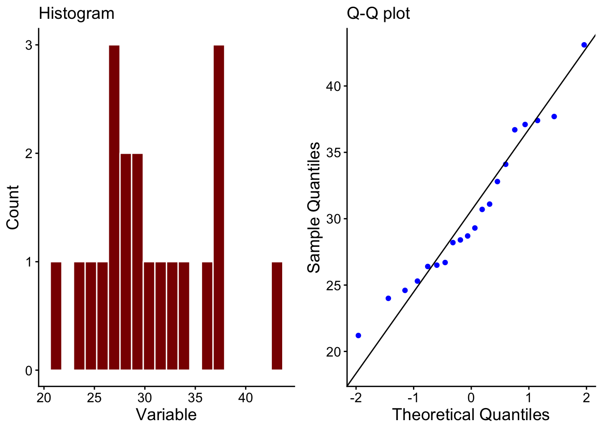
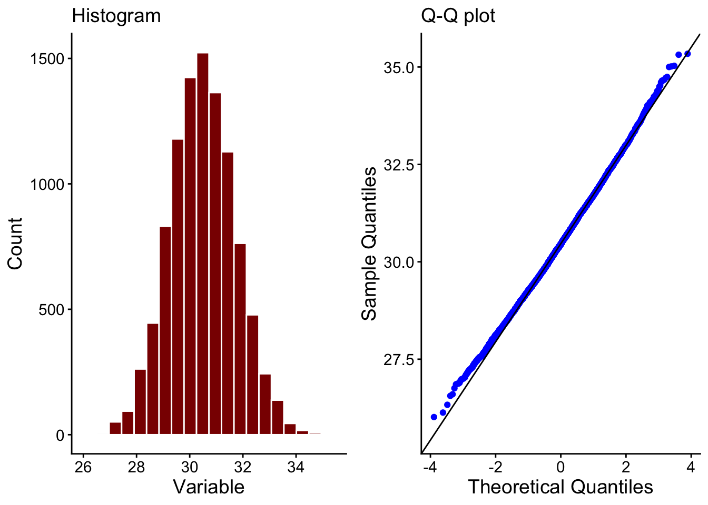

library(tidyverse)
library(here)
library(gridExtra)
library(cowplot)25 The bootstrap - a way to estimate a confidence interval
Suppose we have some body fat data, with measurements of the percentage body fat taken from 20 adults.
#filepath<-here("data","body_fat.csv")
df<-tibble(pc_fat=c(25.3,29.3,37.7,32.8,24.6,26.5,21.2,28.4,24,28.7,37.4,30.7,36.7,28.2,26.4,37.1,31.1,43.1,34.1,26.7))25.1 Summary statistics of the data
First of all we would like to find the mean of the sample which will be our best estimate of the mean of the population.
print(paste0("Mean = ",mean(df$pc_fat)))
## [1] "Mean = 30.5"To estimate the precision of this estimate we need to calculate the standard error of the mean or a confidence interval, usually the 95% confidence interval. With the latter in particular this can be tricky if the data is a small data set or one that is not normally distributed.
Is that the case here: let’s see:
25.2 Plot the data
p1<-histogram(df,pc_fat)
p2<-qq_plot(df,pc_fat)
grid.arrange(p1,p2,nrow=1)
These data are not looking very normally distributed. With a larger data set this might not matter, since the central limit theorem assures us that the sampling distribution of the mean will be asymptotically normally distributed. That means that it would be if the data set were large enough. However, n = 20 is probably not large enough.
Why does this matter? Well, if we want to calculate a 95% confidence interval for our estimate of the population mean, then we usually assume that the sampling distribution is normally distributed, then take the 2.5% and 97.5% quantiles of that distribution as the lower and upper bounds of the confidence interval.
We can’t do this if we can’t be sure that the sampling distribution is normally distributed.
What do we do instead? We can use the bootstrap method developed by Efron, Tibshirani and others.
25.3 Take bootstrap samples
The idea here is to repeatedly draw from our sample with replacement to create new samples.
# returns a single bootstrap sample of the original sample
bootstrap_sample<-function(original_sample){
return (sample(original_sample,length(original_sample),replace=TRUE))
}
# returns the means of N bootstrap samples
bootstrap_sampling_dist_of_means<-function(sample,N){
map_dbl(1:N, ~ mean(bootstrap_sample(sample)))
}
# returns the bootstrap estimated mean and CI lower and upper bounds of the mean
bootstrap_sampling_dist_of_means_summary<-function(sample,N,CI){
a<-map_dbl(1:N, ~ mean(bootstrap_sample(sample)))
c(mean(a),quantile(a,c((1-CI/100)/2,((CI/100)+1)/2)))
}25.4 Find the SE and CI of the mean
We do this a large numbe of times, maybe 10000 times and for each bootstrap sample we calculate the mean, to create oveall a so-called sampling distribution of the means as shown in Figure 25.1.
p3<-histogram(tibble(x=bootstrap_sampling_dist_of_means(df$pc_fat,10000)),x)
p4<-qq_plot(tibble(x=bootstrap_sampling_dist_of_means(df$pc_fat,10000)),x)
grid.arrange(p3,p4,nrow=1)
We now simply find the mean, the standard deviation and the 2.5% and 97.5% quantiles of this distribution. We already have an estimate of the mean from the original sample, but the 2.5% and 97.5% percentiles give us estimates of the lower and upper bounds of the 95% confidence interval on that estimate of the mean. That, mostly, is what we want from the bootstrap method.
op<-bootstrap_sampling_dist_of_means(df$pc_fat,2000)
mean_estimate<-mean(op)
#mean_se<-sd(bootstrap_sampling_dist_of_means$x)
mean_CI95<-quantile(op,c(0.025,0.975))
mean_estimate
## [1] 30.5
#mean_se
mean_CI95
## 2.5% 97.5%
## 28.1 33.0
bootstrap_sampling_dist_of_means_summary(df$pc_fat,2000,95)
## 2.5% 97.5%
## 30.5 28.1 33.0